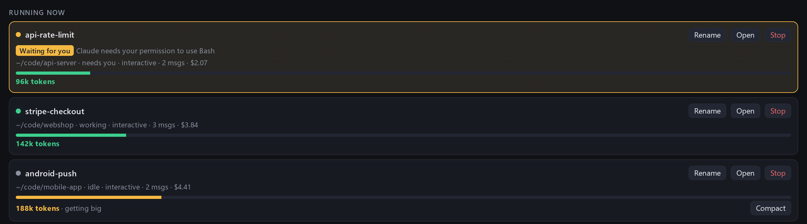
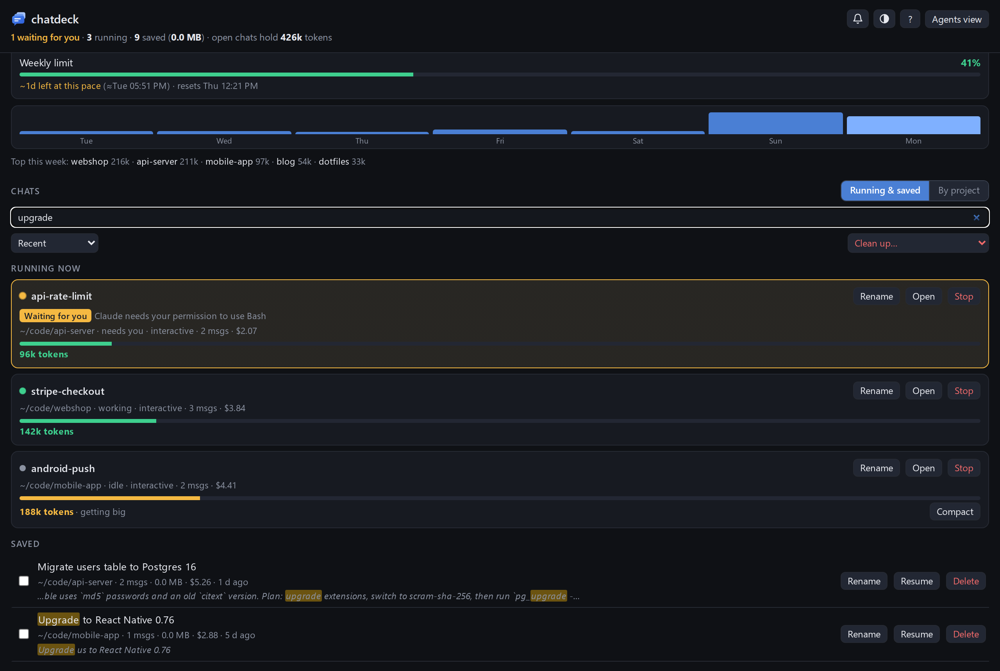
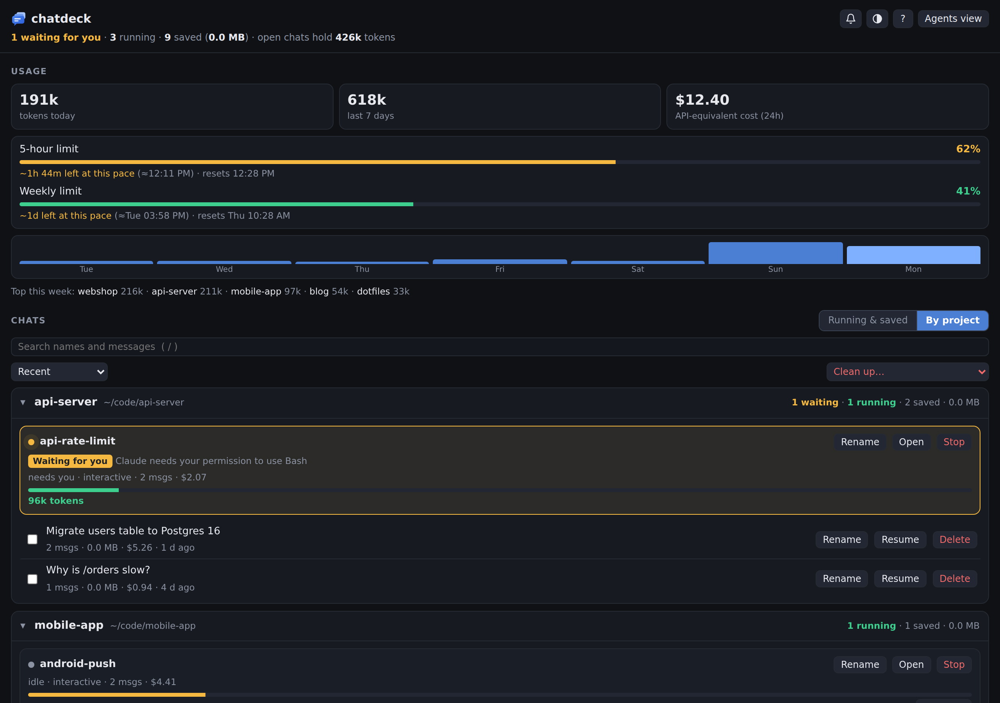
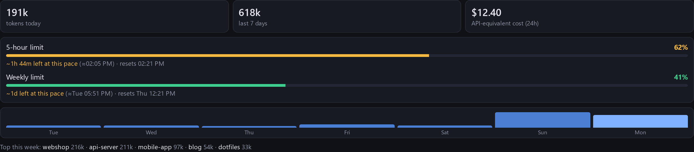
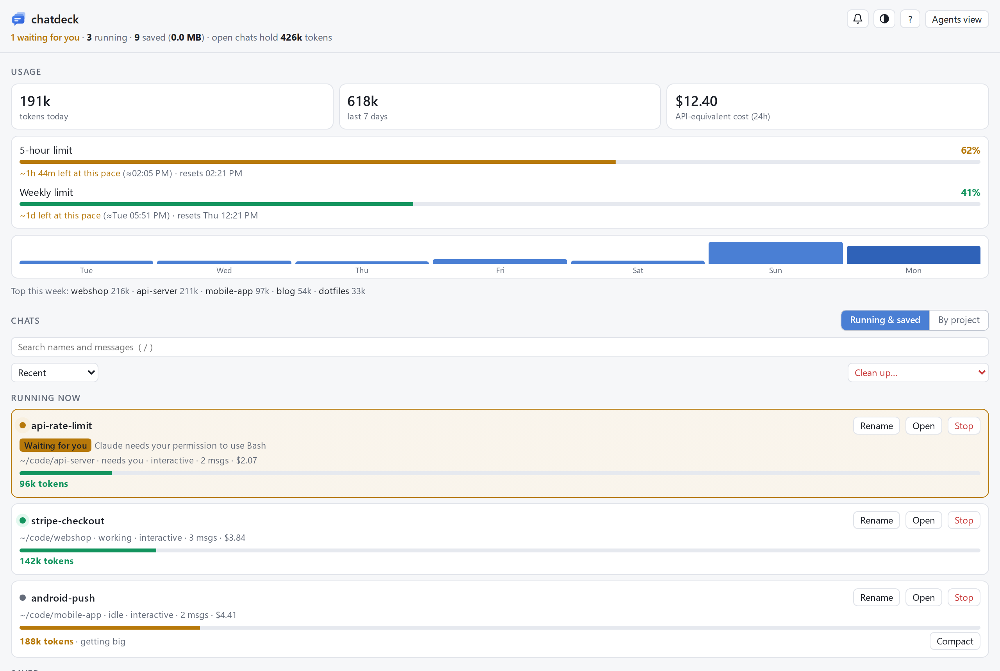

Know which Claude chat needs you
A free dashboard for every Claude Code chat, on your machine.
pipx install chatdeck
Python 3.9 or newer. No accounts, no dependencies.
chatdeck 1 waiting for you, 3 running
- api-rate-limitWaiting for you96k
- stripe-checkoutWorking142k
- android-pushGetting big188k
- release-postIdle31k
What your terminal tabs hide
A chat stuck on a permission prompt turns amber, with an optional chime. Open jumps to its terminal tab.

Find any chat by what was said in it, and read it without resuming it.

One section per repo, its running and saved chats together, and a New chat button.

Your 5-hour and weekly limits, and when you would hit them at the current pace.

When will you hit your limit?
chatdeck works it out from your pace. Try it.
At this pace you hit the limit in
1h 44m
That is 32 min before it resets. Pace yourself, or switch chats to a cheaper model.
used at this pace, until the reset past the limit
Your chats never leave your machine
chatdeck reads the files Claude Code already writes, and talks only to itself.
- Claude Code writes each chat to
~/.claude/projects. - chatdeck reads them and serves the dashboard on 127.0.0.1 only.
- It changes only what you ask, and backs up your settings first.
Runs where Claude Code runs
| System | Opens chats in | Extras |
|---|---|---|
| Windows, through WSL | Windows Terminal | A corner button and tray icon |
| macOS | Terminal or iTerm2 | Starts at login |
| Linux | gnome-terminal, konsole, kitty and six more | Starts at login |
Try it on made-up chats first
pipx install chatdeck
chatdeck demo # sample chats, yours untouched
chatdeck setup # limits and waiting alerts
chatdeck